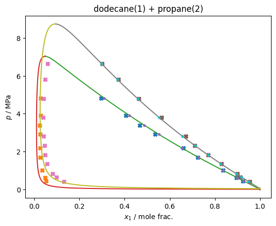

Multi-fluid Parameter Fitting¶
Here is an example of fitting the \(\beta_T\) and \(\gamma_T\) values for the binary pair of propane+\(n\)-dodecane with the multi-fluid model. It uses differential evolution to do the global optimization, which is probably overkill in this case as the problem is 2D and other algorithms like Nelder-Mead or even approximate Hessian methods would probably be fine.
In any case, it takes a few seconds to run (when the actual optimization is uncommented), demonstrating how one can fit model parameters with existing tooling from the scientific python stack.
[1]:
import json
import teqp, numpy as np, pandas, matplotlib.pyplot as plt
import scipy.interpolate, scipy.optimize
import pandas
data = pandas.read_csv('VLE_data_propane_dodecane.csv')
[2]:
def cost_function(parameters:np.ndarray, plot:bool=False):
# Fitting some parameters and fixing the others
betaV, gammaV = 1.0, 1.0
betaT, gammaT = parameters
# betaT, gammaT, betaV, gammaV = parameters
BIP = [{
'function': '',
'BibTeX': 'thiswork',
'CAS1': '112-40-3',
'CAS2': '74-98-6',
'F': 0.0,
'Name1': 'n-Dodecane',
'Name2': 'n-Propane',
'betaT': betaT,
'betaV': betaV,
'gammaT': gammaT,
'gammaV': gammaV
}]
model = teqp.build_multifluid_model(["n-Dodecane", "n-Propane"], teqp.get_datapath(),
BIPcollectionpath=json.dumps(BIP)
)
ancs = [model.build_ancillaries(ipure) for ipure in [0,1]]
cost = 0.0
# The 0-based index of the fluid to start from. At this temperature, only one fluid
# is subcritical, so it has to be that one, but in general you could start
# from either one.
ipure = 0
for T in [419.15, 457.65]:
# Subset the experimental data to match the isotherm
# being fitted
dfT = data[np.abs(data['T / K90'] - T) < 1e-3]
if plot:
plt.plot(1-dfT['x[0] / mole frac.'], dfT['p / Pa']/1e6, 'X')
plt.plot(1-dfT['y[0] / mole frac.'], dfT['p / Pa']/1e6, 'X')
try:
# Get the molar concentrations of the pure fluid
# at the starting point
anc = ancs[ipure]
rhoL0 = np.array([0, 0.0])
rhoV0 = np.array([0, 0.0])
rhoL0[ipure] = anc.rhoL(T)
rhoV0[ipure] = anc.rhoV(T)
# Now we do the trace and convert retuned JSON
# data into a DataFrame
df = pandas.DataFrame(model.trace_VLE_isotherm_binary(T, rhoL0, rhoV0))
if plot:
plt.plot(df['xL_0 / mole frac.'], df['pL / Pa']/1e6)
plt.plot(df['xV_0 / mole frac.'], df['pL / Pa']/1e6)
# Interpolate trace at experimental pressures along this
# isotherm to get composition from the current model
# The interpolators are set up to put in NaN for out
# of range values
x_interpolator = scipy.interpolate.interp1d(
df['pL / Pa'], df['xL_0 / mole frac.'],
fill_value=np.nan, bounds_error=False
)
y_interpolator = scipy.interpolate.interp1d(
df['pL / Pa'], df['xV_0 / mole frac.'],
fill_value=np.nan, bounds_error=False
)
# The interpolated values for the compositions
# along the trace at experimental pressures
x_model = x_interpolator(dfT['p / Pa'])
y_model = y_interpolator(dfT['p / Pa'])
if plot:
plt.plot(x_model, dfT['p / Pa']/1e6, '.')
# print(x_model, (1-dfT['x[0] (-)']))
errTx = np.sum(np.abs(x_model-(1-dfT['x[0] / mole frac.'])))
errTy = np.sum(np.abs(y_model-(1-dfT['y[0] / mole frac.'])))
# If any point *cannot* be interpolated, throw out the model,
# returning a large cost function value.
#
# Note: you might need to be more careful here,
# if the points are close to the critical point, a good model might
# (but not usually), undershoot the critical point of the
# real mixture
#
# Also watch out for values of compositons in the data that are placeholders
# with a value of nan, which will pollute the error calculation
if not np.isfinite(errTx):
return 1e6
if not np.isfinite(errTy):
return 1e6
cost += errTx + errTy
except BaseException as BE:
print(BE)
pass
if plot:
plt.title(f'dodecane(1) + propane(2)')
plt.xlabel('$x_1$ / mole frac.'); plt.ylabel('$p$ / MPa')
plt.savefig('n-Dodecane+propane.pdf')
plt.show()
return cost
[3]:
# The final parameter values, will be overwritten if
# optimization call is uncommented
x = [1.01778992, 1.17318854]
# Here is the code used to do the optimization, uncomment to run it
# Note: it is commented out because it takes too long to run on doc builder
#
# res = scipy.optimize.differential_evolution(
# cost_function,
# bounds=((0.9, 1.5), (0.75, 1.5)),
# disp=True,
# polish=False
# )
# print(res)
# x = res.x
cost_function(x, plot=True)

[3]:
0.47041664920218196